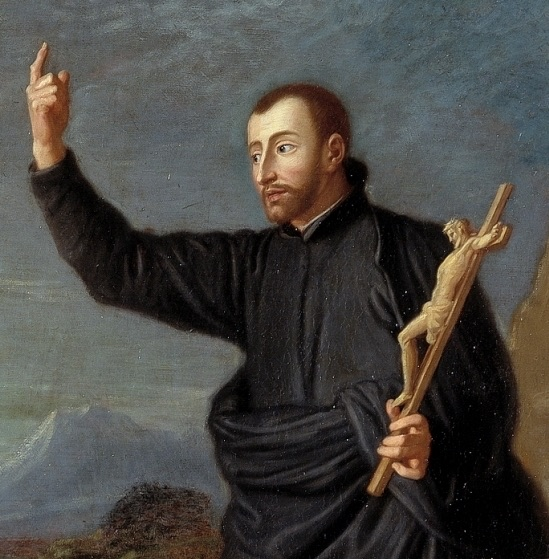
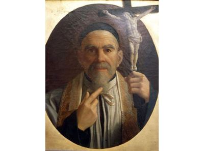
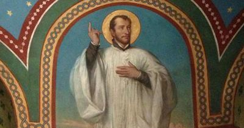

Misionari, pastiri i mistici (Pojedinačna proglašenja)
Svećenik
Sv. Ivan Franjo Regis
1597. – 1640.
Njegova su misijska putovanja povezivala francuska sela, gradske bolnice i zatvore. Propovijedanje je pratio konkretnom pomoći siromašnima i ljudima bez sigurnoga doma, ostajući uz zajednice i tijekom teških zimskih mjeseci.

Izvor slike


Izvor slike


Izvor slike
- Spomendan
- 16. lipnja
- Zaštitništvo
- čipkarice
- Životni vijek
- 1597. – 1640.
- Djelovanje
- Misije i evangelizacija · Siromašni i isključeni · Bolesnici i umirući
- Razdoblje
- 16., 17. stoljeće
- Datum rođenja
- 31.01.1597.
- Mjesto rođenja
- Fontcouverte, Aude, Francuska
- Datum smrti
- 31.12.1640.
- Mjesto smrti/mučeništva
- La Louvesc (Lalouvesc), Francuska
- Okolnosti smrti/mučeništva
- Umro od bolesti tijekom zimskih pučkih misija.
- Uloga
- Svećenik
- Mučenik
- Ne
- Ostale oznake
- Pučki misionar; skrbnik siromašnih i napuštenih žena
- Pripadnost
- Isusovac
- Drugi oblici imena
- Ivan Franjo Régis · John Francis Regis · John · Jean-François Régis · Jean Francois Regis · Ivan Francis Regis
Životopis
Sveti Ivan Franjo Regis bio je francuski isusovac i pučki misionar koji je propovijedanje i ispovijedanje povezivao s poučavanjem djece i pomaganjem siromašnima. Njegov su rad obilježila putovanja kroz južnu Francusku, osobito kroz krajeve Vivaraisa i Velaya. U planinska sela odlazio je i zimi, kada su seoske obitelji bile kod kuće, a u gradovima je obilazio bolnice, zatvore i ljude bez sigurnoga smještaja. Njegova svećenička služba trajala je tek desetak godina, ali je ostavila dubok trag u zajednicama koje je posjećivao.
Rodio se 31. siječnja 1597. u Fontcouverteu, u današnjem departmanu Aude, u Languedocu. Potjecao je iz imućnije obitelji. Školovao se u isusovačkom kolegiju u Béziersu, gdje je upoznao red kojemu će poslije pripadati. U novicijat Družbe Isusove u Toulouseu stupio je 1616., a nakon dvije godine položio je redovničke zavjete. Slijedila je dugotrajna priprava za svećeništvo, u kojoj su se studij i poučavanje izmjenjivali s redovničkim odgojem i molitvom.
Retoriku je učio u Cahorsu, filozofiju u Tournonu, a teologiju u Toulouseu. Predavao je u nekoliko isusovačkih kolegija, među njima u Billomu, Le Puyu i Auchu; njegovo se nastavničko djelovanje povezuje i s Pamiersom. U tim je godinama poučavao gramatiku i druge školske sadržaje. Kasnije je kao misionar posebnu pozornost posvećivao jednostavnu tumačenju vjere. I u školskom i u pastoralnom radu obraćao se slušateljima koje je trebalo postupno uvoditi u ono što uče. Za svećenika je zaređen 1630. u Toulouseu.
U Toulouseu je kao mladi svećenik pomagao oboljelima u vrijeme kuge. Godine 1632. poslan je u Montpellier, gdje je tijekom sljedećih dviju godina propovijedao, poučavao i pomagao potrebitima. Posjećivao je bolnice te govorio o vjeri djeci i odraslima. Njegovi su govori ostali zapamćeni po jednostavnosti i neposrednosti. U Francuskoj su još bile snažne posljedice vjerskih ratova, a crkveni život mnogih zajednica bio je oslabljen. Njegove su misije uključivale obnovu katoličkoga života i susrete s ljudima iz različitih društvenih slojeva.
Na poziv biskupa Viviersa počeo je održavati misije u njegovoj biskupiji. Kao putujući propovjednik prelazio je iz župe u župu i u svakoj ostajao po nekoliko dana. Propovijedao je, slavio misu, ispovijedao i djecu poučavao katekizmu. Misije su se nastavile u Vivaraisu, Velayu i susjednim područjima. Ljudi u pojedinim mjestima dugo nisu imali redovitu pastoralnu skrb, pa je dolazak svećenika značio priliku za ispovijed, razgovor i obnovu vjerskoga života. Regis je radio i sa svećenicima i s laicima, a zatim nastavljao put prema drugoj zajednici.
Raspored je prilagođavao seoskom i gradskom životu. Ljeti su poljski poslovi odvodili seljake iz kuća, pa je tada više djelovao u gradovima. Zimi ih je lakše mogao okupiti, ali je putovanje po gorju bilo znatno teže. Hodao je predjelima sa slabim putovima, izložen hladnoći i snijegu. U gradovima su mu jutra često bila ispunjena misom i ispovijedanjem, a drugi dio dana posjetima zatvorenicima i bolesnicima. Ta je redovita izmjena sakramentalne službe i posjeta potrebitima obilježila njegov apostolat.
Za siromašne je prikupljao hranu, odjeću i novac. Pomoć je tražio od onih koji su imali više sredstava te ih uključivao u brigu za ljude koji nisu mogli sami osigurati uzdržavanje. S tim se radom povezuje i Bratovština Presvetoga Sakramenta, koja je organizirala dobrotvorne priloge. Među njegovim se djelima spominje žitnica za siromašne, a za bolesnike je tražio pomoć liječnika, njegovateljica i ljekarnika. Opskrbu hranom povezivao je tako s pribavljanjem potrebne njege. Materijalna pomoć pratila je poučavanje i slavljenje vjere. U bolnicama i zatvorima susretao je ljude koji nisu mogli dolaziti slušati njegove propovijedi, pa je sam odlazio k njima. Njegovo djelovanje obuhvaćalo je i zajednicu okupljenu u crkvi i osobe izdvojene bolešću ili zatočeništvom.
Osobitu je skrb posvećivao ženama i djevojkama ugroženima siromaštvom i iskorištavanjem. Pomagao im je pronaći utočište i mogućnost rada. U njegovim se životopisima spominju kuće za njihov prihvat te poučavanje izradi čipke. Učenje zanata pružalo je mogućnost vlastite zarade i sigurnijega života. Zbog te se djelatnosti njegovo ime trajno povezalo s čipkaricama. Skrb za žene izložene iskorištavanju izazivala je i protivljenje, klevete i prijetnje. U nekim je okolnostima nailazio na nerazumijevanje među svećenicima i poglavarima.
Poglavari su mu, prema životopisnim prikazima, ograničili osnivanje novih kuća za ugrožene žene. Prihvatio je tu odluku, nastavljajući druge oblike služenja. Želio je otići u Kanadu i ondje djelovati kao misionar, ali je ostao u Francuskoj. Njegovo je misijsko područje postalo selo i grad vlastite zemlje: siromašne obitelji, bolesnici, zatvorenici i ljudi udaljeni od crkvenoga života. Redovnička poslušnost i raspoloživost za poslanje u njegovu su se životu ostvarivale kroz zadaće koje su mu bile povjerene.
Njegova duhovnost pripadala je ignacijevskoj tradiciji Družbe Isusove. Molitva i predanje Božjoj volji pratili su apostolski rad, a evanđeoske savjete nastojao je živjeti u skromnosti i služenju. Već tijekom priprave za svećeništvo, uz zahtjevne školske obveze, provodio je mnogo vremena u kapeli. U kasnijoj se službi njegova molitva povezivala s misom i dugotrajnim ispovijedanjem. Pred posljednje je misije ponovno izdvojio vrijeme za duhovnu obnovu. U papinskom osvrtu na četiristotu obljetnicu njegova rođenja Ivan Pavao II. posebno je istaknuo Regisovu poniznost i pouzdanje u Providnost. Papa je njegovu jednostavnu riječ i dobročinstva povezao s pomirenjem u obiteljima i zajednicama izmučenima ratovima. Propovjednička i ispovjednička služba u toj je baštini ostala usmjerena prema miru s Bogom i bližnjima. Regisovo nastojanje da ljudima vrati vjersku i životnu sigurnost obuhvaćalo je oboje.
Prema isusovačkom životopisu, posljednja ga je misija odvela u gorovite krajeve u prosincu 1640. Nakon rada u Montregardu povukao se na nekoliko dana duhovne obnove u Le Puy, a zatim se s bratom Claudeom Bideauom vratio dovršiti misiju. Dana 23. prosinca krenuli su prema Lalouvescu. Na putu ih je zahvatila zimska oluja, pa su noć proveli u zaklonu i stigli sljedećega dana. Ondje je Regis nastavio propovijedati, ispovijedati i slaviti misu tijekom božićnih dana. Ubrzo je ozbiljno obolio. Nastavio se moliti i u posljednjim danima. Umro je u Lalouvescu 31. prosinca 1640., u četrdeset četvrtoj godini života.
Njegov grob u Lalouvescu postao je hodočasničko mjesto. Među kasnijim hodočasnicima bio je Ivan Marija Vianney, budući arški župnik. Papa Klement XI. proglasio ga je blaženim 1716., a papa Klement XII. svetim 1737. U francuskoj crkvenoj tradiciji slavi se 16. lipnja; Rimski martirologij spominje ga 31. prosinca, a pojedini isusovački kalendari 2. srpnja. Njegovo je ime nastavilo živjeti u zajednicama i ustanovama koje su pomagale siromašnima i bavile se poučavanjem.
Ivan Franjo Regis ostao je posebno blizak ljudima koji su teško dolazili do redovite svećeničke službe i materijalne pomoći. U njegovu su se radu povezali učitelj iz isusovačkoga kolegija, ispovjednik i putujući propovjednik, posjetitelj bolesnika i organizator dobročinstava. Od školskih pouka do posljednjih božićnih misija u Lalouvescu njegov je život obilježen istim nastojanjem: prenijeti vjeru razumljivom riječju i služiti ljudima u njihovim konkretnim potrebama.
Život i nasljeđe
Regis je u školskome radu proveo znatan dio života prije samostalnih pučkih misija. U Billomu, Le Puyu i Auchu predavao je gramatiku, a uz nastavničke obveze odlazio je u okolna mjesta održavati jednostavne vjerske pouke. Povijesni životopis naglašava da se njegova propovjednička sposobnost mogla opažati još prije ređenja. Školska služba tako nije bila samo čekanje nekoga pravog apostolata. Dala mu je iskustvo objašnjavanja, prilagođavanja slušateljima i postupnoga vođenja ljudi kroz sadržaje koje nisu prethodno poznavali.
Njegov rad u Montpellieru poznajemo i iz izvještaja mjesnoga rektora vrhovnome poglavaru Družbe. To je važna vrsta svjedočanstva jer pokazuje kako su suvremenici prosuđivali njegov način rada. U izvještajima se ističe sposobnost pučkih misija, ali kasniji životopis ne prešućuje protivljenje. Dio ljudi držao je da se previše miješa u obiteljske prilike ili da mu je propovijedanje preoštro. Neki su se zbog toga obratili biskupu Viviersa, koji je morao razmotriti pritužbe.
Takvo iskustvo pomaže razumjeti zašto njegov put nije bio niz općeprihvaćenih uspjeha. Briga za žene koje su izlazile iz iskorištavanja dodirivala je i interese ljudi koji su od njihove ovisnosti imali korist. Životopisci govore o izravnim prijetnjama. Istodobno su i vlastiti poglavari morali procjenjivati je li pojedini pothvat održiv. Regisova osobna revnost djelovala je unutar zajednice, s njezinim pravilima i ograničenim sredstvima, a ne kao potpuno samostalno djelovanje bez odgovornosti prema drugima.
Njegovo posljednje razdoblje obilježava osobit izbor: pošto nije dobio dopuštenje za kanadske misije, prihvatio je teške zimske misije u francuskim gorjima. Udaljenost od velikih gradova i vremenske prilike činile su ta mjesta pastoralno zahtjevnima. Povijesni smisao njegova služenja stoga nije iscrpljen naslovom pučkoga propovjednika. Radio je među ljudima do kojih je bilo teško doći, nastojeći im približiti pouku, ispovijed i materijalnu pomoć. Odbijena želja za dalekim putovanjem tako je postala usmjerenje prema potrebama u vlastitoj zemlji.
Pročitaj više na izvornoj stranici ↗